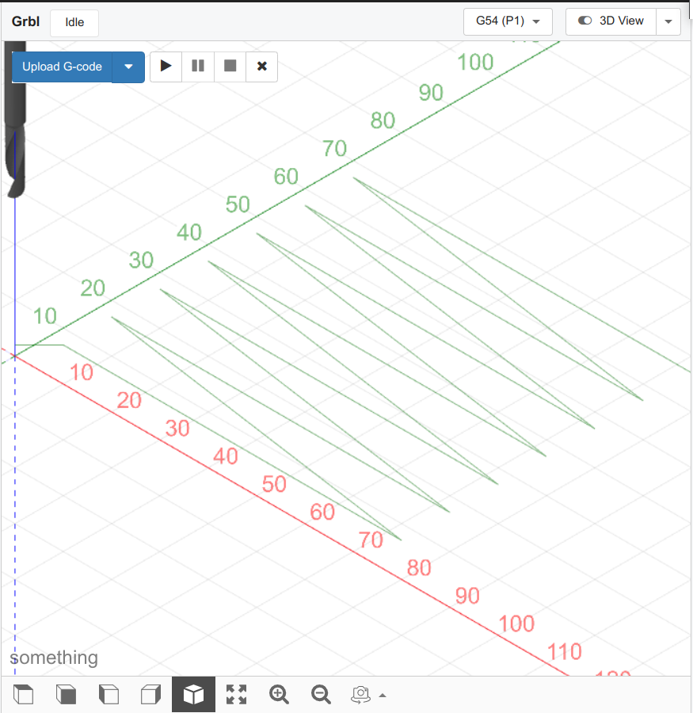

|
User Manual |
|
|
User Manual |
Note:
Use the software at your own risk. Author is not responsible for any damages.

In the Axes widget:
Zero out the X-axis and the Y-Axis
Open the Probe widget:
Set the Touch Plate Thickness to Zero.


Click on "Setup" in the AutoLevel widget to setup the AutoLevel grid
Choose the probing area to match the size of the area of the PCB that will be isolation milled,
You can choose to save the g-code for probing to a file for later re-use
by clicking on "Make File"
or you can load the g-code directly into the workspace
by clicking on "Upload G-Code"

Click on the play button in the Visualization panel.
The probing code will now start.
The results will be displayed in the AutoLevel widget table,
as the probe touches each individual point

Click on "Apply in the AutoLevel widget
To use the results of the just completed probing run, leave the checkbox named "Use current probing data" checked.
To use the results of a previously completed probing run, check "Use a file" and select a probing results file.
In the section named "Original G-Code", click on the "Select" button and choose the file to which you want the AutoLevel results applied.
You can now upload the autolevelled G-Code to the workspace
by clicking on "Upload G_Code"
Or you can save the autolevelled G-Code to a File
by clicking on "Make File"